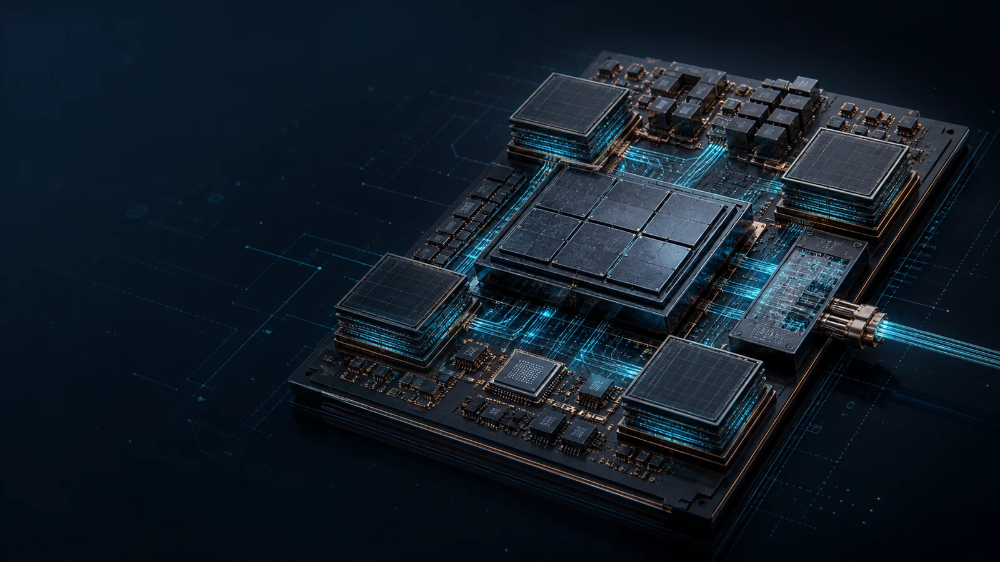
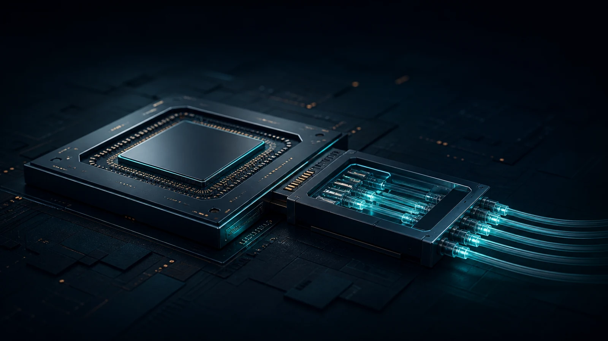
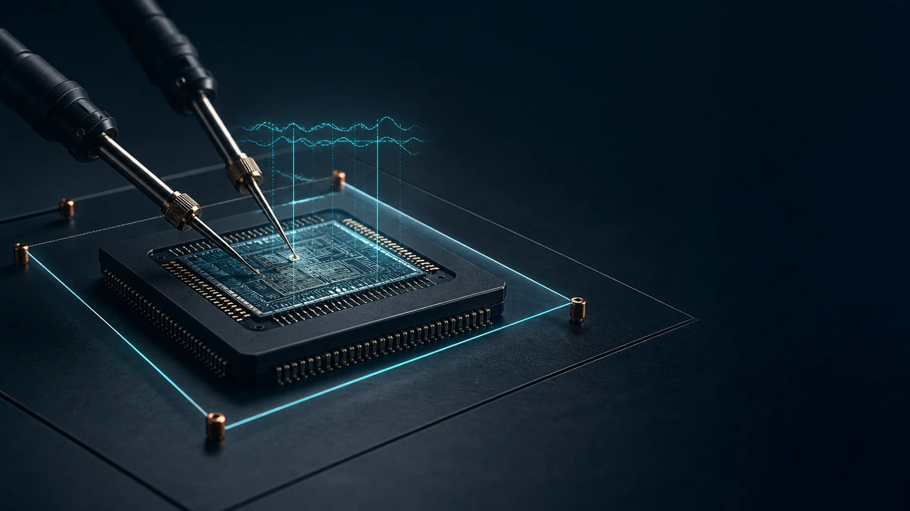
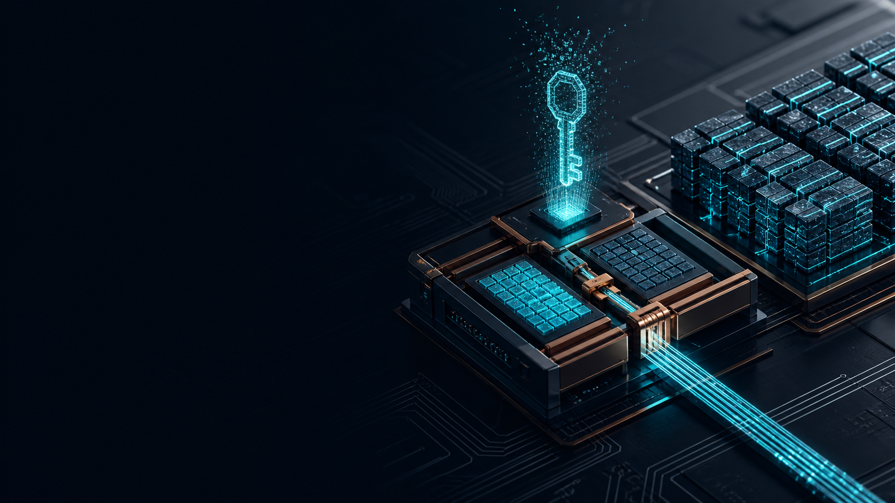

標準或 supplied PDF 明確要求的行為。Behavior explicitly required by a standard or supplied paper.

概念系統圖 · 非實體拓撲 ILLUSTRATIVE SYSTEM MAP · NOT PHYSICAL TOPOLOGY
研究筆記 04 · AI 系統／持久狀態RESEARCH NOTE 04 · AI SYSTEMS / PERSISTENT STATE
NVM 不必
遍布 AI 系統
NVM does not belong
everywhere in AI systems
真正的機會，是讓每一個系統邊界保存正確的狀態。 The opportunity is to preserve the right state at each system boundary.
從 XPU identity、HBM repair、CPO calibration 到 firmware 與 RAS evidence，本章先說明來源明確要求或展示的行為，再把 OTP、MTP、managed NVM 或 external storage 標為有界的架構候選。 From XPU identity and HBM repair to CPO calibration, firmware and RAS evidence, this chapter establishes what each source explicitly requires or demonstrates—then labels OTP, MTP, managed-NVM or external-storage choices as bounded architecture candidates.
4 個領域4 DOMAINS
XPU 信任、HBM/PMIC 修復、光模組校準與主機遙測嚴格分界Strict boundary across XPU trust, HBM/PMIC repair, CPO & telemetry
294 頁294 PAGES
OCP、JEDEC DDR5 與 HBS 規格一級文獻嚴格對照驗證Grounded against 294 pages of OCP, JEDEC DDR5 & HBS primary specs
N5 → N2 GAA
純邏輯製程相容，Core-supply Direct Read 降壓解耦Pure logic compatible; Direct core-supply read into FinFET / GAA
釐清適用邊界ZERO AMBIGUITY
根信任與遙測日誌分離，防止將有限次寫入誤植為無限串流Decouple immutable RoT from bounded telemetry; no false mandates
來源釐清 · OCP 列出的 Lightmatter 貢獻文件 · 並非已採納的 OCP 規範SOURCE CORRECTION · OCP-LISTED LIGHTMATTER CONTRIBUTION · NOT AN ADOPTED OCP SPECIFICATION
本次審閱的 OCP 文件未要求 OTP／MTP MemoryThis OCP Paper Does Not Require OTP or MTP Memory
OCP Server Project 公開列出這份 Lightmatter contribution；它不是已採納的 OCP specification。文件中的兩處 MTP 都是 MPO／MTP 光纖接頭，不能用來證明 NVM。另行引用的 JEDEC DDR5 與 OCP Hardware Secure Boot 標準，才分別建立 PMIC MTP、SPD Hub 可重寫 NVM 與 BMC 不可變安全狀態。其餘配置仍須逐項驗證。The OCP Server Project publicly lists this Lightmatter contribution; it is not an adopted OCP specification. Its two MTP occurrences mean MPO/MTP optical connectors and are not NVM evidence. Separate JEDEC DDR5 and OCP Hardware Secure Boot standards establish PMIC MTP, SPD Hub rewritable NVM and immutable BMC security state. Other placements remain subject to validation.
01 · 核心主張01 · EXECUTIVE THESIS
State Contract 優先
Memory Selection 在後State Contract First
Memory Selection Second
同一套 AI platform 同時存在不可變信任、有限次更新、即時控制與大量 operational evidence。把它們都塞進 OTP 或都寫進 MTP，會同時造成安全、endurance 與系統責任錯配。One AI platform contains immutable trust, bounded updates, live control and high-volume operational evidence. Putting everything in OTP—or writing everything into MTP—misaligns security, endurance and ownership.
具名產品或官方實作展示此 lifecycle 已存在。A named product or official implementation demonstrates that the lifecycle exists.
同儕審查實作或獨立實體分析支持機制。Peer-reviewed implementation or independent physical analysis supports the mechanism.
公開 IP envelope；不是 independent assurance。A public IP envelope—not independent assurance.
由系統需求推導的 NVM placement。An NVM placement inferred from a system need.
節點、PVT、攻擊或 update workload 尚未封閉。Node, PVT, attack or update workload remains open.
02 · 系統需求壓力02 · SYSTEM PRESSURE
AI 擴大 State Diversity
不只是增加 NVM 容量AI Expands State Diversity
Not Merely NVM Capacity
每一條 state lane 都有不同的 mutability、update cadence、temperature、atomicity 與 evidence 需求。這些條件才是 IP opportunity 的入口。Each state lane has a different mutability, update cadence, temperature, atomicity and evidence requirement. Those conditions—not a generic bit count—define the IP opportunity.
01不可變信任IMMUTABLE TRUST
身分、root、fail-safe baselineIdentity, roots, fail-safe baseline
少量、低寫入、不可回退。候選：OTP 或 PUF-derived root；證書與 helper data 另行定義。Small, rarely written and non-reversible. Candidates: OTP or a PUF-derived root; certificates and helper data require separate treatment.
OTP／PUF 根金鑰OTP / PUF ROOT02有界生命週期BOUNDED LIFECYCLE
repair、anti-rollback、field profileRepair, anti-rollback, field profiles
有限次更新，必須具備 authenticated transition、atomic commit 與 recovery。Bounded updates require authenticated transitions, atomic commit and recovery.
受管理的 NVMMANAGED NVM03即時調適LIVE ADAPTATION
equalization、thermal loop、timing servoEqualization, thermal loops, timing servo
runtime training 通常留在 SRAM／register；只有 cold-start seed 或 qualified snapshot 才形成 NVM 機會。Runtime training normally stays in SRAM/registers. Only a cold-start seed or qualified snapshot creates an NVM opportunity.
揮發性狀態VOLATILE STATE04運作證據OPERATIONAL EVIDENCE
CPER、telemetry、fleet historyCPER, telemetry, fleet history
高頻資料先 aggregate、reduce、forward；embedded MTP 只適合 workload 已被界定的 fault capsule。High-rate data should be aggregated, reduced and forwarded. Embedded MTP fits only a fault capsule with a bounded workload.
主機／BMC／外部儲存HOST / BMC / EXTERNAL持久狀態基礎PERSISTENT-STATE SUBSTRATE
狀態邊界優先元件相鄰不等於架構State Boundaries FirstComponent Adjacency Is Not Architecture
一個 AI platform，多個邏輯 state domain；持久化必須由可驗證的 contract 管理，而不是每個 IP 的預設配置。One AI platform, multiple logical state domains. Persistence must be governed by a verifiable contract—not assumed in every IP.
封裝圖僅為示意PACKAGE ARTWORK IS ILLUSTRATIVE
封裝示意 · 非實體拓樸ILLUSTRATIVE PACKAGE · NOT TOPOLOGY
00 AI 封裝AI PACKAGE
XPU
安全隔離區SECURITY ISLAND
根金鑰 · 政策ROOT · POLICY
HBM 修復領域HBM REPAIR DOMAIN契約CONTRACTXPU 安全隔離區XPU SECURITY ISLAND
修復中繼資料 ≠ 揮發性工作資料REPAIR METADATA ≠ VOLATILE PAYLOAD
Repair metadata 可持久；HBM payload 與 SRAM runtime state 保持 volatile，BISR 與 repair authority 仍依產品而定。Repair metadata may persist. HBM payload and SRAM runtime state stay volatile; BISR and repair authority are product-specific.
SerDes 邊界SERDES BOUNDARY資料DATAOE 控制器與 PICOE CTRL + PIC
即時等化 · 揮發性LIVE EQ · VOLATILE
Live EQ 保持 volatile；只有 recovery time 證明需要時，cold-start seed 才是合理 inference。Live EQ stays volatile. Persist a cold-start seed only when recovery time justifies the inference.
ELS／雷射控制ELS / LASER CTRL光LIGHTPIC
光源 · 非資料路徑LIGHT SOURCE · NOT DATA PATH
ELS 提供 optical power，不承載 data；只有 controller ownership 被證明時才保存 local state。ELS supplies optical power, not data. Persist local state only when controller ownership is proven.
電源與安全 · PMICPOWER & SAFETY · PMIC∥平台管理 · DC-SCM／BMCPLATFORM MGMT · DC-SCM / BMC
分離的權限層SEPARATE AUTHORITY PLANES
PMIC 處理 power/reset；BMC secure boot 需要 OTP-class 不可變狀態，並可協調 authenticated firmware、RAS 與 evidence。root 位於 BMC die 或 companion HWRoT，仍依產品架構而定。PMIC handles power/reset. BMC secure boot requires OTP-class immutable state and may orchestrate authenticated firmware, RAS and evidence. Whether the root resides on the BMC die or a companion HWRoT remains product-specific.
邏輯 persistence-contract view：XPU security island、HBM repair domain、SerDes boundary、optical engine、laser controller、PMIC 與 platform management 參與不同的 persistence contract；authoritative owner 仍須依產品架構確認。Package artwork 僅為視覺說明，不代表實體位置或協定拓撲。Logical persistence-contract view: the XPU security island, HBM repair domain, SerDes boundary, optical engine, laser controller, PMIC and platform management participate in distinct persistence contracts; the authoritative owner remains product-specific. The package artwork is illustrative and does not represent physical placement or protocol topology.
圖解邊界：Diagram boundary: 上方 package artwork 僅為視覺說明；下方 contract view 呈現 state boundary 與 validation responsibility，不是 OCP spec、實體 floorplan 或 local NVM mandate。The package artwork is illustrative. The contract view shows state boundaries and validation responsibility—not an OCP specification, physical floorplan or local-NVM mandate.
03 · 機會地圖03 · OPPORTUNITY MAP
Evidence 定義系統行為
Inference 定位 NVM 價值Evidence Defines System Behavior
Inference Locates NVM Value
先用來源支持模式查看 requirement、official case、technical evidence 與 disclosure，再開啟有界推論。每張卡分開呈現 evidence、candidate fit、validation gate 與 limit。Start with the source-grounded view for requirements, official cases, technical evidence and disclosures, then include bounded inferences. Every card separates evidence, candidate fit, validation gate and limitation.
07目前顯示的機會卡VISIBLE OPPORTUNITY CARDS
01XPU／信任根XPU / ROOT OF TRUST
官方產品案例OFFICIAL PRODUCT CASE
H100 On-Die Trust 與 AttestationH100 On-Die Trust and Attestation
NVIDIA H100 公開架構包含 on-die RoT、secure／measured boot、SPDM 與 attestation。它建立 persistent identity 的產品需求，不代表任何單一 OTP／PUF 實作必然較安全。NVIDIA's public H100 architecture includes an on-die RoT, secure/measured boot, SPDM and attestation. It establishes a product need for persistent identity—not that one OTP or PUF implementation is universally safer.
狀態／適用性STATE / FIT身分錨點IDENTITY ANCHOROTP 或 PUF 衍生根金鑰OTP or PUF-derived root
需確認 provisioning 與 physical threat modelProvisioning and physical threat model remain target-specific
硬體信任根子系統 (Quiddikey / tRoot / CryptoManager) ↗
Hardware RoT Subsystems (Quiddikey / tRoot / CryptoManager) ↗
02韌體生命週期FIRMWARE LIFECYCLE
推論機會INFERRED OPPORTUNITY
Immutable Root 與 Mutable Rollback StateImmutable Root and Mutable Rollback State
OCP 要求 signed update、version reporting 與 rollback behavior；SPDM 定義 device-constant identity，但把 provisioning mechanism 留在規格之外。最佳 fit 不是把整個 image 放進 OTP。OCP calls for signed updates, version reporting and rollback behavior. SPDM defines device-constant identity but leaves provisioning out of scope. The best fit is not to place the entire image in OTP.
狀態／適用性STATE / FIT根金鑰＋計數器＋映像ROOT + COUNTER + IMAGEOTP／PUF＋受管理的 NVM＋快閃記憶體OTP/PUF + managed NVM + flashcounter 需 authenticated、atomic、recoverableCounters must be authenticated, atomic and recoverable
03HBM／SRAM 修復HBM / SRAM REPAIR
官方產品案例OFFICIAL PRODUCT CASE
Repair State 的可靠度與 Attestation 證據Repair State as Reliability and Attestation Evidence
NVIDIA row remap 可在 device life 持續生效；Hopper channel repair 會改變 attestation measurement。Siemens 也顯示 fusebox programming session 可能非常有限。NVIDIA row remapping persists for device life, while Hopper channel repair can change attestation measurements. Siemens also shows that fusebox programming sessions may be very limited.
狀態／適用性STATE / FIT修復對照表REPAIR MAP熔絲／受管理的稀疏狀態Fuse / managed sparse state合法修復必須與 measurement／RIM 同步Authorized repair must stay coherent with measurements/RIMs
04光子技術／CPOPHOTONICS / CPO
推論機會INFERRED OPPORTUNITY
Factory Baseline 與 Live Thermal ControlFactory Baseline and Live Thermal Control
OCP 指出 ring wavelength 對溫度敏感；CMIS 支援 diagnostics 與 statistics。這支持 per-unit trim／safe limit 的持久化機會，但 continuous tuning 應留在 volatile control。OCP identifies temperature-sensitive ring wavelength; CMIS supports diagnostics and statistics. That supports persistent per-unit trim and safe limits, while continuous tuning should remain volatile.
狀態／適用性STATE / FIT基線與執行期間控制迴路BASELINE + RUNTIME LOOPOTP 基線與選用的 MTP 設定檔OTP baseline + optional MTP profile連續微調 ≠ 連續 NVM 寫入Continuous tuning ≠ continuous NVM writes
05PMIC 啟動基準PMIC STARTUP TRUTH
官方產品案例OFFICIAL PRODUCT CASE
PF8100／PF8200 的 OTP Boot BaselinePF8100/PF8200 OTP Boot Baseline
NXP PF8100／PF8200 每次 VIN crossing 從 OTP 載入 mirror registers，再載入 functional registers。這展示 immutable startup configuration 的實際產品價值。NXP PF8100/PF8200 loads mirror registers from OTP at a VIN crossing, then loads functional registers. It demonstrates the real product value of immutable startup configuration.
狀態／適用性STATE / FIT安全開機組態SAFE BOOT CONFIGOTP器件案例；不可直接外推所有 AI PMICDevice-specific; not universal to every AI PMIC
06故障摘要FAULT CAPSULE
官方產品案例OFFICIAL PRODUCT CASE
ADP1055 的有界 Black-Box LoggingADP1055 Bounded Black-Box Logging
ADI ADP1055 以 EEPROM 保存 fault snapshot，並公開 temperature-dependent record limit、circular buffer 與 hold-up capacitor 條件。這是 bounded logging 的設計範本。ADI ADP1055 stores fault snapshots in EEPROM and discloses temperature-dependent record limits, a circular buffer and hold-up-capacitor condition. It is a design pattern for bounded logging.
狀態／適用性STATE / FIT事件觸發紀錄EVENT-DRIVEN RECORD受管理的 EEPROM／MTPManaged EEPROM / MTP先定義 Tj、event rate、atomic write 與 retentionDefine Tj, event rate, atomic write and retention first
07RAS／遙測RAS / TELEMETRY
推論機會INFERRED OPPORTUNITY
Telemetry Stream 的分層儲存Tiered Storage for Telemetry Streams
OCP RAS API 與 supplied PDF 要求 discovery、configuration、event／action queues 與跨域 diagnostics；local NVM 只應保留 threshold、checkpoint 或 last-gasp capsule。The OCP RAS API and supplied paper call for discovery, configuration, event/action queues and cross-domain diagnostics. Local NVM should retain only thresholds, checkpoints or a last-gasp capsule.
狀態／適用性STATE / FIT先彙整再儲存REDUCE BEFORE STORESRAM 緩衝 → BMC／主機儲存SRAM buffer → BMC / host storageraw stream 優先 forward，不持續磨耗 embedded NVMForward the raw stream; do not continuously wear embedded NVM
08小晶片生命週期與開機時序CHIPLET LIFECYCLE & BOOT TIMING
推論機會 · 開機時序解析INFERRED OPPORTUNITY · BOOT TIMING RESOLUTION
Per-Die 信任狀態與 PCIe/CXL LTSSM 100ms 開機架構Per-Die Trust State and PCIe/CXL LTSSM 100ms Boot Architecture
UCIe 2.0 擴充 manageability 與 DFx lifecycle，確立 per-die identity、repair ownership、debug lock 與 firmware metadata 的機會（UCIe 規範中的 MTP 係指 Management Transport Protocol）。在高速小晶片開機架構中，PCIe/CXL 實體層鏈路訓練 (LTSSM) 在系統重置後具備嚴苛的 100ms 鏈路握手超時窗口；若嘗試自片上慢速嵌入式 NVM（讀取頻寬通常僅 bandwidth band ）直接載入數十至數百 MB 的複雜 AI 韌體，耗時將高達數秒並觸發 LTSSM 超時斷鏈。架構解答是「片上不可變微型 RoT (32B Hash) + 片外高速分層載入」：片上僅需微型 OTP/PUF 儲存 32 位元組 LMS/SHA-256 根雜湊（次微秒內極速錨定信任），大容量韌體則透過外掛高頻 Quad/Octal SPI 或主機通道分層載入 SRAM/DRAM 並由硬體管線即時驗簽，兼顧硬體信任根之安全要求與 100ms 鏈路訓練時限。UCIe 2.0 expands manageability and DFx lifecycle, supporting per-die identity, repair ownership, debug locks, and firmware metadata (note that UCIe's MTP denotes Management Transport Protocol). In advanced chiplet architectures, PCIe/CXL physical layer LTSSM enforces a strict 100ms link-training timeout window upon reset de-assertion. Attempting to boot tens or hundreds of megabytes of complex accelerator firmware directly from slow on-die eNVM (typically 10-50 MB/s read bandwidth) takes seconds and causes fatal LTSSM link-down panics. The architectural resolution decouples this into "On-die Immutable Micro-RoT (32B Hash) + Hierarchical Off-chip High-speed Loading": on-die OTP/PUF stores only a 32-byte LMS/SHA-256 root hash (anchored in sub-microseconds), while bulk firmware is streamed via high-speed external Quad/Octal SPI or host memory into SRAM/DRAM with pipelined signature verification—strictly meeting the LTSSM timing window (not a universal 100ms figure) window.
狀態／適用性STATE / FIT微型信任根與分層開機MICRO-RoT + TIERED BOOT晶片內 32B OTP 雜湊與晶片外快速開機32B on-die OTP hash + off-chip fast boot片上 32B 信任根錨定 + 片外高速分層載入，消除 LTSSM 100ms 逾時矛盾On-die 32B RoT anchor + off-chip high-speed boot resolves LTSSM timing window (not a universal 100ms figure) timeout
09CXL 記憶體裝置CXL MEMORY DEVICE
推論機會INFERRED OPPORTUNITY
Online Firmware 與 PPR 的 Lifecycle ContractOnline Firmware and PPR Lifecycle Contract
CXL 3.2 公開功能包含 online firmware activation、post-package repair、monitoring 與 security。規格證明行為；memory medium、banking、atomicity 與 recovery 仍由產品架構決定。CXL 3.2 publicly includes online firmware activation, post-package repair, monitoring and security. The specification proves the behavior; memory medium, banking, atomicity and recovery remain product-architecture decisions.
狀態／適用性STATE / FIT韌體與修復中繼資料FW + REPAIR METADATA受管理的 NVM 與外部映像儲存Managed NVM + external image storeCXL 未指定 OTP／MTP technologyCXL does not prescribe OTP/MTP technology
10DDR5 PMIC
直接需求DIRECT REQUIREMENT
JEDEC 明確定義 PMIC MTP NVMJEDEC Explicitly Defines PMIC MTP NVM
JESD301-2 將 multiple-time-programmable NVM 納入 DDR5 PMIC 的持久設定與狀態契約。應用位置已由標準建立，不再是「等待產品證明」的假設。JESD301-2 places multiple-time-programmable NVM inside the DDR5 PMIC persistent-configuration and status contract. The application socket is standards-defined—not a hypothesis awaiting product proof.
狀態／適用性STATE / FIT電源組態與狀態POWER CONFIG + STATUSMTP／受管理的 NVMMTP / managed NVMmacro、PVT、endurance 與 recovery 仍須 qualificationMacro, PVT, endurance and recovery still require qualification
11DDR5 SPD HUB
直接需求DIRECT REQUIREMENT
8-Kbit 可重寫 NVM 是 SPD Hub 標準功能8-Kbit Rewritable NVM Is a Standard SPD Hub Function
JESD300-5B.01 定義 1024-byte、16-block 的 SPD EEPROM／可重寫 NVM 功能。Embedded MTP 是有界的實作候選，不是 JEDEC 指定的 bitcell 技術。JESD300-5B.01 defines a 1024-byte, sixteen-block SPD EEPROM/rewritable-NVM function. Embedded MTP is a bounded implementation candidate, not a JEDEC-prescribed bitcell technology.
狀態／適用性STATE / FIT模組身分與組態MODULE ID + CONFIGEEPROM 功能 → MTP 候選EEPROM FUNCTION → MTP CANDIDATEwrite protection、cycles 與 PVT 依實作驗證Qualify write protection, cycles and PVT per implementation
12BMC 安全信任根BMC SECURITY ROOT
需求 · 供應商揭露 · 候選適用性REQUIREMENT · VENDOR DISCLOSURE · CANDIDATE FIT
BMC Security State：Requirement、Disclosure 與 Architecture FitBMC Security State: Requirement, Disclosure and Architecture Fit
OCP 規格要求 BMC 使用 hardware-immutable source of verification，但未指定 OTP、PUF 或實體位置。Axiado SCM3003 product brief 另行公開 on-chip OTP roots、三個 4-Kbyte OTP 與 on-chip PUF；這是 vendor disclosure，不是 shipment、deployment 或 attack certification 證據。OCP requires a hardware-immutable source of verification for BMC secure boot but does not prescribe OTP, PUF or physical placement. The Axiado SCM3003 product brief separately discloses on-chip OTP roots, three 4-Kbyte OTPs and an on-chip PUF; that is vendor disclosure, not shipment, deployment or attack-certification evidence.
狀態／適用性STATE / FIT根金鑰＋政策＋撤銷ROOT + POLICY + REVOCATIONOTP 與選用的 PUF 衍生根金鑰OTP + optional PUF-derived rootplacement 與 physical assurance 仍依產品而定Placement and physical assurance remain product-specific
目前篩選條件沒有相符紀錄。No records match the current filters.
03B · HBM4 邏輯製程躍遷與生態系大轉移03B · HBM4 LOGIC BASE DIE & ECOSYSTEM SHIFT
HBM4 Base Die 轉向先進邏輯製程
修復 (Repair) 架構革命與測試探針卡價值鏈轉移
HBM4 Base Die Migration to Advanced Logic
The eNVM Repair Revolution & Probe Card Value Chain Shift
到 HBM3E 為止，堆疊最底層的 Base Die（底座晶粒）均採用 DRAM 製程，由記憶體 IDM 原廠（SK 海力士、三星、美光）內部自行生產。HBM4 迎來半導體架構顛覆：Base Die 全面改採先進邏輯製程（三星自家代工 4nm、SK 海力士委託台積電 12nm/3nm、美光積極評估導入晶圓代工），實質蛻變為一顆具備 2048-bit 超寬 PHY 的小型邏輯晶片 (Mini-SoC)。這不僅重塑了晶粒內嵌 NVM 的修復 (Repair) 物理與良率防禦鏈，更引發晶圓測試 (Wafer Sort) 採購權力大移轉，帶動探針卡需求從傳統記憶體探針卡廠流向先進邏輯探針卡生態系。 Up to HBM3E, the bottom Base Die (buffer die) utilized DRAM process technologies manufactured in-house by memory IDMs (SK Hynix, Samsung, Micron). HBM4 introduces a structural paradigm shift: the Base Die transitions completely to advanced logic processes (Samsung in-house 4nm foundry, SK Hynix partnering with TSMC 12nm/3nm, Micron evaluating logic foundries), effectively evolving into a high-performance mini-logic SoC with a 2048-bit ultra-wide PHY. This revolutionizes embedded NVM redundancy repair physics and triggers a massive wafer test procurement shift, transferring probe card demand from memory suppliers to advanced logic testing leaders.
從 DRAM 緩衝層蛻變為小型邏輯 SoC From DRAM Buffer Die to Mini-Logic SoC
HBM4 匯流排寬度自 1024-bit 倍增至 2048-bit，為克服巨量 I/O 能耗、信號偏斜與散熱挑戰，Base Die 正式脫離 DRAM 產線，全面導入先進邏輯代工製程。 HBM4 doubles the interface from 1024-bit to 2048-bit. To overcome interconnect energy, signal skew, and thermal dissipation limits, the Base Die departs DRAM fabs and adopts advanced logic foundry processes.
- 三星 (Samsung)：Samsung: 採用具備 GAA 架構之自家晶圓代工 4 奈米 (4nm) 邏輯製程。 Employs in-house 4nm logic foundry process with GAA nanosheet capability.
- SK 海力士 (SK Hynix)：SK Hynix: 策略結盟台積電 (TSMC)，第一代採 12nm (N12FFC+)，下一代邁入 3nm (N3E/N3P) 級極致能效節點。 Partners with TSMC, starting on 12nm (N12FFC+) and advancing to 3nm class (N3E/N3P) nodes.
- 美光 (Micron)：Micron: 延續自研製程評估，並積極對接外部先進邏輯代工生態系。 Evaluates in-house DRAM baselines while actively qualifying external logic foundries.
邏輯製程 eNVM 守護 16 層堆疊複合良率 Logic eNVM Safeguards 16-High Stack Yield
HBM4 堆疊多達 12 至 16 層 DRAM Core Dies，面臨極端嚴苛的乘法良率損耗。轉向邏輯製程後，邏輯相容 AntiFuse OTP 成為封裝後修復 (hPPR) 與線路重映射之關鍵核心。 HBM4 stacks 12 to 16 DRAM core dies, causing compounded yield losses. On logic base dies, logic-compatible AntiFuse OTP becomes indispensable for post-package repair (hPPR) and redundancy remapping.
- 零額外光罩 (0-Mask Adder)：Zero Extra Masks (0-Mask): 原生相容台積電 12nm/3nm 與三星 4nm 標準 CMOS，無昂貴光罩增加成本。 Native to standard CMOS logic with zero extra mask adders and zero FEOL disruption.
- 耐受 260°C 封裝熱預算：Withstands 260°C Thermal Budget: 介電質擊穿矽微絲為永久性歐姆通路，杜絕傳統 Poly eFuse 在高溫重熔下的金屬熱鬆弛回跳 (Zero Grow-Back)。 Dielectric breakdown filaments form permanent ohmic paths with zero thermal grow-back during reflow bonding.
- 晶片內幫浦與多維重映射：Internal Pump & Multidimensional Remap: 內建電荷幫浦消除高電流外部 PGM Pad 負擔，儲存 DRAM 壞列、TSV 備援及 2048-bit PHY 偏斜微調參數。 On-chip charge pumps eliminate high-current PGM pads, storing DRAM core bad rows, TSV spares, and 2048-bit PHY skew trim.
晶圓測試移轉晶圓代工，採購方大換血 Foundry Wafer Sort Shifts Probe Card Demand
當 Base Die 的晶圓測試 (Wafer Sort) 移至台積電與三星晶圓代工端，測試採購方由記憶體 IDM 換為晶圓代工與先進 ASIC 客戶，需求從記憶體探針卡轉向先進邏輯探針卡。 As Base Die wafer sort relocates to TSMC and Samsung foundries, procurement authority shifts from memory IDMs to logic foundries and fabless customers, transferring probe card demand to advanced logic test leaders.
- 採購移轉：Supplier Transition: 測試介面需求自傳統記憶體垂直探針卡向先進微間距邏輯探針卡架構移轉。 Demand shifts away from legacy memory probe configurations toward advanced logic probe architectures.
- 代表性廠商：Representative Vendors: 旺矽 (MPI, 6223)、中華精測 (CHPT, 6510)、Technoprobe 與 FormFactor。 MPI (6223.TW), CHPT (6510.TW), Technoprobe, and FormFactor (FORM).
- 技術架構升級：Technical Architecture Evolution: 針對台積電與三星 Base Die 測試之高針數微間距探針卡，支援 2048-bit 超寬並行介面。 Advanced high-pin fine-pitch probe cards support 2048-bit ultra-wide parallel sort for TSMC/Samsung Base Dies.
| 比較架構維度Comparison Dimension | HBM3E 世代 (現行量產標準)HBM3E Generation (Current Volume) | HBM4 世代 (先進邏輯顛覆)HBM4 Generation (Advanced Logic Shift) | 半導體產業鏈與測試意涵Supply Chain & Testing Implications |
|---|---|---|---|
| Base Die 製程技術Base Die Process Node | DRAM 專用製程 (1-alpha / 1-beta DRAM)DRAM Process (1-alpha / 1-beta DRAM) | 先進邏輯代工製程 (4nm / 12nm / 3nm FinFET/GAA)Advanced Logic Foundry (4nm / 12nm / 3nm FinFET/GAA) | Base Die 實質升級為小型邏輯 SoC，具備高速計算能力Base die evolves into a mini-SoC with logic compute capability |
| 晶圓代工與製造方Wafer Manufacturing Source | 記憶體 IDM 原廠內部晶圓廠 (In-house Memory Fabs)In-house Memory IDM Fabs (SK Hynix, Samsung, Micron) | 純晶圓代工廠與代工部門 (TSMC、Samsung Foundry)Pure-play Foundries (TSMC for SK Hynix, Samsung Foundry) | 晶圓生產權力自記憶體部門轉移至全球代工雙雄Manufacturing shifts from memory divisions to top foundries |
| 匯流排介面寬度Interface Bus Width | 1024-bit 匯流排寬度1024-bit Bus Width | 2048-bit 超寬匯流排 (頻寬直接倍增)2048-bit Ultra-Wide Bus (2x Bandwidth Doubling) | TSV 針腳數量與走線密度呈倍數暴增，修復複雜度極大化TSV count doubles, exponentially scaling repair complexity |
| 修復 NVM 介質與技術Embedded NVM for Repair | DRAM eFuse / 雷射熔斷 (Laser Fuse)DRAM eFuse / Legacy Laser Fuse | 邏輯相容 AntiFuse OTP (0-Mask / 晶片內幫浦)Logic-Compatible AntiFuse OTP (0-Mask / Internal Pump) | 永久局域微絲通道，260°C 回熔零回彈，杜絕高電流 Pad 負擔Permanent filament path with zero grow-back and no high-current pads |
| 晶圓測試 (Wafer Sort) 採購方Wafer Sort Procurement | 記憶體廠採購部門 (SK 海力士、三星、美光)Memory IDM Procurement Divisions | 晶圓代工廠與高階 Fabless 客戶 (TSMC、Samsung Foundry、CSP)Logic Foundries (TSMC, Samsung Foundry) & Hyperscale Fabless | 採購決策方轉向邏輯生態系，資格認證由台積電/三星主導Procurement moves to logic ecosystem under TSMC/Samsung qualification |
| 測試探針卡類型Probe Card Technology Class | 記憶體探針卡 (Memory Probe Cards，多並行低頻)Memory Probe Cards (Multi-DUT Low/Mid-Frequency) | 先進高頻垂直/MEMS 邏輯探針卡 (Micro-pitch Logic Probe Cards)Advanced High-Speed Vertical/MEMS Logic Probe Cards | 測試轉向微間距、高針數、高頻數位混訊 (BIST / Scan / 2048-bit PHY)Focuses on micro-pitch, ultra-high pin count, and high-speed BIST logic |
| 代表性探針卡供應商Representative Probe Vendors | Micronics Japan (MFI 6871.T)、FormFactorMicronics Japan (6871.T), FormFactor (FORM) | 旺矽 (MPI 6223)、中華精測 (CHPT 6510)、Technoprobe、FormFactorMPI (6223.TW), CHPT (6510.TW), Technoprobe, FormFactor | 微間距 MEMS 探針卡滿足 2048-bit 高針數並行測試與低接觸力規範Fine-pitch MEMS probe cards meet 2048-bit parallel sort and low contact force requirements |
產業追蹤與法說會關鍵觀測指標：高密度邏輯探針卡架構Industry & Earnings Call Watch: High-Density Logic Probe Cards
在 HBM4 Base Die 高密度測試中，業界關注 FormFactor、Technoprobe、旺矽 (6223) 與中華精測 (6510) 等供應商之微間距 MEMS 探針卡架構演進。由於台積電 12nm/3nm 與三星 4nm Base Die 整合 2048-bit PHY 介面與 BIST 邏輯，探針卡需具備高並行針數容納能力與低接觸力，以兼顧測試覆蓋率與銅焊墊表面平整度。In HBM4 Base Die high-density testing, industry attention centers on micro-pitch MEMS architectures from vendors such as FormFactor, Technoprobe, MPI (6223.TW), and CHPT (6510.TW). As TSMC 12nm/3nm and Samsung 4nm base dies integrate 2048-bit PHY and BIST logic, probe cards require high parallel pin capacity and ultra-low contact force to balance test coverage with pad coplanarity.
第一性原理修復閉環：從 CP 晶圓測試到 JEDEC hPPRFirst-Principles Repair: From Wafer Sort to JEDEC hPPR
在台積電或三星代工廠端，邏輯探針卡於 Wafer Sort 階段全面測試 Base Die 邏輯與 2048-bit PHY 完整性；完成多層 Core DRAM 堆疊與封裝後，內嵌於邏輯 Base Die 的 AntiFuse OTP 則透過 JEDEC hPPR 標準指令永久燒錄壞位元與 TSV 重映射地址，構成由晶圓測試至封裝後現場運行的全生命週期良率閉環。At TSMC or Samsung foundries, logic probe cards verify base die logic and 2048-bit PHY integrity during wafer sort. Following multi-tier DRAM stacking and packaging, logic-compatible AntiFuse OTP permanently burns defective row and TSV remap addresses via JEDEC hPPR instructions, delivering a complete wafer-to-field yield lifecycle.
HBM4 先進封裝 · 複合良率挽回與邏輯探針卡經濟學分析
HBM4 ADVANCED PACKAGING · COMPOUND YIELD RECOVERY & LOGIC PROBE CARD ECONOMICS
HBM4 邏輯 Base Die 複合堆疊良率、eNVM 封裝後修復 (hPPR) 與高針數探針卡模擬器 HBM4 Logic Base Die Stacked Yield, eNVM Post-Package Repair (hPPR) & High-Pin Probe Card Simulator
HBM4 轉向邏輯 Base Die（如先進代工 12nm/5nm/3nm 世代）深刻影響了 3D DRAM 堆疊的良率修復方程式與測試介面需求。透過邏輯相容 0-mask AntiFuse OTP 進行 2048-bit PHY 偏斜微調、TSV 冗餘切換與 Core DRAM 壞列重映射，具備較佳耐受 260°C 回焊熱預算之金屬微絲穩定性，緩解 12-Hi / 16-Hi 的複合良率挑戰。同時，測試介面朝向高針數、微間距垂直與 MEMS 邏輯探針卡架構演進，以支援高密度並行晶圓級測試。 HBM4's transition to logic base dies impacts both 3D stacked DRAM repair strategies and test interface demands. Leveraging logic-compatible 0-mask AntiFuse OTP for 2048-bit PHY skew trim, TSV redundancy, and core row remapping offers stable metallic filaments with high tolerance to 260°C reflow thermal budgets, mitigating 12-Hi/16-Hi compound yield penalties. Concurrently, wafer-sort interfaces migrate toward high-pin MEMS logic probe cards for dense parallel sort.
DRAM Core 良率 (Y_core):CORE DIE YIELD:
95.5%
堆疊層數 (Die Stack):STACK LAYERS:
16-Hi
探針卡測試針數 (Pin Count):PIN COUNT:
8,192 pins
未修復原始良率RAW STACK YIELD
—
多層指數相乘良率懸崖Compound drop-off
AntiFuse 修復後良率REPAIRED YIELD
—
0-Mask 260°C 零回彈Zero grow-back hPPR
單顆模組挽回價值VALUE RECOVERED
—
每顆 HBM 挽回毛利Margin saved per unit
代工探針卡 HBM 曝險FOUNDRY PROBE EXPOSURE
—
法說會資本支出敏感度Capex sensitivity
架構評級RATING
OPTIMAL
第一性原理綜合評估First-principles audit
Loading HBM4 base die repair calculations...
03-CXL · CXL 3.1 記憶體池化、硬體 CAM 標籤快取與 ANTIFUSE 信任根
03-CXL · CXL 3.1 MEMORY POOLING, HW CAM TAG CACHE & ANTIFUSE ROT
CXL 3.1 記憶體池化架構、晶片內硬體 CAM 標籤快取與 AntiFuse 信任根動態毒化屏蔽 CXL 3.1 Fabric-Attached Memory Pooling, On-Die HW CAM Tag Cache & AntiFuse RoT Poison Shielding
隨生成式 AI 叢集與分散式推論模型規模暴增，傳統伺服器內部固定配置之 DRAM 正面臨 40%–50% 的嚴重「困頓記憶體 (Stranded Memory)」浪費。CXL 3.1 協定透過光纖/銅纜 Fabric-Attached Memory (FAM) 架構與 Dynamic Capacity Device (DCD) 動態分派，實現跨節點多主機 (Multi-Headed) 記憶體池化。然而，CXL 記憶體池化面臨嚴峻的兩大挑戰：第一，跨交換器跳步 (Hops) 帶來的額外延遲必須控制在 150–200ns 容許邊界內；第二，池化記憶體若發生單元軟硬錯誤或電離擊穿，必須具備動態毒化警報 (Dynamic Poison Alert) 與壞頁隔離，避免引發多主機內核連鎖崩潰 (Kernel Panic)。在此體系中，控制器內建之晶片內硬體 CAM 標籤快取提供次 10ns 快速過濾，而 0-Mask AntiFuse OTP 則作為 DMTF SPDM 1.3 安全設備證明之硬體信任根與安全開機靜態密鑰儲存介質。 As generative AI clusters and distributed LLM models scale rapidly, servers suffer from 40%–50% stranded memory inefficiencies under fixed local DRAM allocations. CXL 3.1 overcomes this bottleneck through Fabric-Attached Memory (FAM) and Dynamic Capacity Devices (DCD), enabling multi-headed memory pooling across disaggregated compute nodes. However, memory pooling introduces two major architectural hurdles: first, switch transit hops must maintain end-to-end access latencies within strict 150–200ns SLAs; second, uncorrectable cell failures require dynamic poison tagging and rapid page isolation to prevent catastrophic cross-host kernel panic propagation. In this architecture, on-die hardware CAM tag filters accelerate lookups within sub-10ns, while logic 0-mask AntiFuse OTP provides the tamper-resistant hardware root-of-trust and secure boot key storage for DMTF SPDM 1.3 device attestation.
| 架構維度Architectural Dimension | 直連本機 DDR5 (Direct-Attach)Direct-Attach DDR5 (Local) | CXL 3.1 記憶體池化 (FAM / DCD)CXL 3.1 Pooled Memory (FAM/DCD) | 3D 堆疊 HBM3E / HBM43D Stacked HBM3E / HBM4 |
|---|---|---|---|
| 1. 實體通道與信號調製1. Physical Signaling | 平行單端 SSTL / POD11 (64-bit + ECC)Parallel single-ended SSTL/POD11 (64-bit + ECC) | PCIe 6.0 PAM4 高速差分 (64 GT/s, 256B Flit)PCIe 6.0 PAM4 SerDes (64 GT/s, 256B Flit) | 2048-bit 超寬矽中介層 / 邏輯 Base Die PHY2048-bit ultra-wide Interposer/Base Die PHY |
| 2. 最大定址池化容量2. Max Addressable Capacity | 受限於 CPU 記憶體控制器通道 (典型 2TB–4TB)Limited by CPU IMC channels (typically 2TB–4TB) | 全網絡共享池化，可擴展至數十 TB 至數 PBGlobal fabric pooled, scalable to tens of TB to PB | 受限於封裝基板面積 (典型 24GB–64GB 每堆疊)Limited by package substrate (24GB–64GB per stack) |
| 3. 端到端讀取延遲3. Read Latency Profile | 約 75–85 ns (極低延遲基準)~75–85 ns (Low latency baseline) | 約 130–185 ns (依交換器跳步與標籤快取而定)~130–185 ns (Dependent on hops and tag cache) | 約 80–110 ns (極高頻寬 1.5–2.0 TB/s)~80–110 ns (Ultra-high bandwidth 1.5–2.0 TB/s) |
| 4. 閒置容量回收率4. Stranded Recovery Rate | 0% (固定專屬，跨節點完全無法借調)0% (Fixed node-bound, non-transferrable) | 動態提升至 88%–94% (挽回近 40% 雲端資本支出估算)Up to 88%–94% (Recovers ~40% estimated cloud memory Capex) | 0% (GPU 加速器專用高速暫存)0% (Dedicated GPU accelerator memory) |
| 5. 毒化與故障隔離時間5. Poison Isolation Time | 依賴 CPU MCE / OS 核心陷阱 (~1,000 ns)Dependent on CPU MCE / OS trap (~1,000 ns) | <10 ns (控制器硬體 CAM 標籤過濾與 Poison 標記轉發)<10 ns (Controller HW CAM filter & Poison tag forwarding) | 硬體 JEDEC hPPR 永久燒錄重映射Hard JEDEC hPPR permanent row remapping |
| 6. 晶片內嵌 NVM 關鍵角色6. Embedded NVM Role | SPD EEPROM 儲存啟動時序參數SPD EEPROM stores boot timing parameters | 0-Mask AntiFuse OTP：SPDM 1.3 信任根憑證與控制器靜態配置0-Mask AntiFuse OTP: SPDM 1.3 RoT credentials & static configuration | AntiFuse OTP 於 Base Die 執行 2048-bit 偏斜微調與 hPPRAntiFuse OTP on Base Die for 2048-bit trim & hPPR |
| 7. 額外製造光罩與封裝成本7. Mask & Packaging Cost | 標準 DIMM PCB 封裝，成熟且成本極低Standard DIMM PCB module, mature low cost | 0 額外光罩 (原生 CMOS 邏輯相容)，PCIe AIC 形態0 extra masks (native CMOS logic), PCIe AIC form-factor | 極高 (CoWoS-S / CoWoS-L 先進矽中介層與 TSV 鍵合)Very high (CoWoS silicon interposer & TSV bonding) |
架構評估互動工作台ARCHITECTURAL EVALUATION WORKBENCH
PCIe 6.0 PAM4 · 次 20ns 毒化阻斷目標PCIe 6.0 PAM4 · Sub-20ns Poison Target
CXL 3.1 延遲堆疊分解、困頓記憶體經濟學與毒化隔離模擬器 CXL 3.1 Latency Breakdown, Stranded Economics & Poison Isolation Simulator
交換器跳步數 (Switch Hops):SWITCH HOPS:
1 hop
記憶體池容量 (Pool Capacity):POOL CAPACITY:
2.0 TB (2048 GB)
標籤快取命中率 (Hit Rate):TAG HIT RATE:
98.5%
端到端存取延遲END-TO-END LATENCY
—
傳輸 + 標籤 + 介質Link + Tag + Media
池化有效利用率POOL UTILIZATION
—
挽回困頓記憶體Stranded recovered
毒化故障攔截時間POISON INTERCEPT
—
次 20ns 零崩潰保證Zero-Panic SLA
資本支出節省額度CAPEX SAVINGS
—
DRAM 購置成本節省Direct DRAM saved
架構評級RATING
OPTIMAL
第一性原理綜合評估First-principles audit
Loading CXL 3.1 memory pooling calculations...
04 · 光子技術／CPO 焦點04 · PHOTONICS / CPO FOCUS
光引擎狀態契約模型
候選持久基線與揮發控制邊界Optical Engine State-Contract Model
Candidate Persistent Baseline and Volatile Control
OE／PIC／ELS 是 supplied OCP paper 與 NVM opportunity space 的高潛力交會點：per-unit identity、factory trim、safe limit、qualification digest 與 sparse recalibration 都是需要驗證的 local persistent-state 候選。OE/PIC/ELS are a high-potential intersection between the supplied OCP paper and the NVM opportunity space: per-unit identity, factory trim, safe limits, qualification digests and sparse recalibration are candidate local persistent states that still require validation.

Factory Identity 與 Qualified BaselineFactory Identity and Qualified Baseline
- 單顆裝置身分Per-unit identity
- 工廠微調Factory trim
- 安全操作限制Safe operating limits
- 資格驗證摘要Qualification digest
這些是由系統需求推導的候選 persistent state；最終 medium、位置與 owner 仍須由產品架構驗證。These are candidate persistent states inferred from system needs. The final medium, location and owner remain product-specific.
上電讀取 · 提議的邏輯流程POWER-UP READ · PROPOSED LOGICAL FLOW
- 01驗證VERIFY
- 02載入LOAD
- 03啟用ACTIVATE
Runtime Adaptation 與 Live TelemetryRuntime Adaptation and Live Telemetry
- 溫度／時序伺服控制Thermal / timing servo
- 訓練係數Training coefficients
- 即時診斷Live diagnostics
- 暫存器／SRAM 狀態Registers / SRAM state
即時狀態在 runtime 持續變化；原始 stream 應先 reduce／forward，不應直接形成 continuous NVM writes。Live state changes continuously at runtime. Reduce or forward the raw stream instead of turning it into continuous NVM writes.
通過資格驗證的更新 · 提議的邏輯流程QUALIFIED UPDATE · PROPOSED LOGICAL FLOW領域 B · 候選更新DOMAIN B · CANDIDATE UPDATE只有通過資格驗證的稀疏更新才跨越持久化邊界Only qualified sparse updates cross the persistence boundary
- 01觀測OBSERVE
- 02資格驗證QUALIFY
- 03授權AUTHORIZE
- 04原子提交ATOMIC COMMIT
→ 候選領域 A · 通過資格驗證的設定檔儲存區→ CANDIDATE DOMAIN A · QUALIFIED PROFILE BANKQualified recalibration 可能形成 managed-NVM opportunity；update cadence、rollback 與 recovery 必須先被界定。Qualified recalibration may create a managed-NVM opportunity, but update cadence, rollback and recovery must be bounded first.
狀態邊界STATE BOUNDARY持續調整CONTINUOUS TUNING≠持續 NVM 寫入CONTINUOUS NVM WRITES
Runtime adaptation 保持 volatile；只有 qualified state 才能穿越 persistence gate。Runtime adaptation stays volatile; only qualified state crosses the persistence gate.
共封裝光學 (CPO) 與矽光子 (SiPh) · 微環熱光漂移與雷射發熱留存分析
CO-PACKAGED OPTICS (CPO) & SILICON PHOTONICS · MRR DRIFT & LASER RETENTION ANALYSIS
微環諧振腔波長漂移、零待機熱調諧與雷射自發熱 eNVM 壽命模擬器 Micro-Ring Resonator Wavelength Drift, Zero-Static Optical Trim & Laser Self-Heating Retention Simulator
在 51.2T+ 高速交換機與光互連 AI 加速器中，共封裝光學（CPO）將光引擎（OE / PIC）與 ASIC 緊密整合。矽的熱光係數高達 1.86×10⁻⁴ K⁻¹，ASIC 與雷射二極體集中散熱將引發微環諧振腔波長劇烈漂移（約 0.08 nm/K）。傳統微加熱器需耗費數瓦持續電力調諧，而採用非揮發性 AntiFuse / Optical PCM 儲存出廠校準與光權重，可實現零待機熱能耗（Zero-Static Power）。同時，高溫對緊鄰雷射的 eNVM 形成 Arrhenius 留存加速衰減考驗。 In 51.2T+ switch CPO and photonic AI accelerators, optical engines (OE/PIC) are tightly integrated with host ASICs. Silicon's high thermo-optic coefficient (1.86×10⁻⁴ K⁻¹) triggers severe micro-ring resonator (MRR) resonance drift (~0.08 nm/K) under laser and ASIC thermal dissipation. Conventional resistive micro-heaters burn continuous watts of static power; non-volatile AntiFuse or Optical PCM locks factory calibration and optical weights with zero static standby power, while laser self-heating imposes critical Arrhenius retention constraints.
環境冷卻溫度:AMBIENT TEMP:
45°C
每通道雷射光功率:LASER POWER / CH:
100 mW
光通道總數 (WDM Channels):WDM CHANNELS:
64 ch
光電接面溫升 (Tj)JUNCTION TEMP (Tj)
--
諧振波長漂移 (Δλ)MRR DRIFT (Δλ)
--
微調節能比 (Savings)TRIM POWER SAVED
--
eNVM 留存壽命NVM RETENTION
--
Loading CPO & Silicon Photonics calculations...
Tier-1 Hyperscale Co-Design
05 · NVM 選型05 · NVM SELECTION
OTP 與 MTP 的分層角色
每一層對應正確的 State ContractLayered Roles for OTP and MTP
The Right State Contract for Each Layer
selection lens 先問 lifecycle，再看 bit count、temperature 與 macro。下列是 architecture class，不是通用 endurance 數字或 foundry availability 承諾。The selection lens starts with lifecycle, then bit count, temperature and macro availability. These are architecture classes—not universal endurance numbers or foundry-availability promises.
典型狀態特徵 · 示意TYPICAL STATE PROFILE · ILLUSTRATIVE不可變／低頻IMMUTABLE / RARE有界更新BOUNDED UPDATE大量資料／串流BULK / STREAM即時／揮發性LIVE / VOLATILE
OTP / FUSE
很少寫、不可回退Rarely written, non-reversible- 裝置身分錨點Device identity anchor
- 故障安全開機基線Fail-safe boot baseline
- 生命週期／除錯鎖定Lifecycle / debug lock
- 工廠微調摘要Factory trim digest
限制：修正錯誤、revocation 與多階段 provisioning 必須預先設計。Limit: error correction, revocation and staged provisioning must be designed up front.
MTP／受管理的 NVMMTP / MANAGED NVM
有限更新、Atomicity 必須由架構保證Bounded Updates, Atomicity Required- 防回復中繼資料Anti-rollback metadata
- 通過資格驗證的校準設定檔Qualified calibration profile
- 修復／重新對映狀態Repair / remap state
- 故障摘要Fault capsule
限制：需要明確 event count、Tj、retention、ECC、commit／recovery。Limit: requires defined event count, Tj, retention, ECC, commit and recovery.
外部／主機儲存EXTERNAL / HOST STORE
大量 code 與 operational evidenceBulk code and operational evidence- 韌體 A／B 儲存區Firmware A/B banks
- CPER／設備群歷史紀錄CPER / fleet history
- 原始特性量測資料Raw characterization
- 憑證鏈／資訊清單Certificate chain / manifests
限制：local root 必須驗證 image、version 與來源。Limit: a local root must verify image, version and provenance.
SRAM／暫存器SRAM / REGISTERS
即時更新、斷電不必保留Live updates, no power-off retention- SerDes 訓練SerDes training
- 溫度控制迴路Thermal control loop
- 時序伺服控制Timing servo
- 遙測緩衝區Telemetry buffer
限制：若 cold restart 要重建，必須另外定義可信 baseline。Limit: if cold restart must recover state, define a trusted baseline separately.
斷電後持續保存PERSISTENT AFTER POWER LOSS是YES是YES是 · 晶片外YES · OFF-DIE否NO
選擇記憶體巨集前的七個問題SEVEN QUESTIONS BEFORE MACRO SELECTION
- 01斷電後一定要保留嗎？Must it survive power loss?
- 02誰可以改？改幾次？Who may change it, and how often?
- 03寫入中斷時如何恢復？How does it recover from a torn write?
- 04狀態是否含 secret？Does the state contain a secret?
- 05它會改變 attestation 嗎？Does it change attestation?
- 06真實 Tj 與 retention 是多少？What are the real Tj and retention needs?
- 07local storage 比 signed pointer 更好嗎？Is local storage better than a signed pointer?
06 · 先進製程 NVM06 · ADVANCED-NODE NVM
製程愈先進
Read-Domain Contract 愈重要As Nodes Advance
The Read-Domain Contract Matters More
先分開三件事：process device availability、embedded NVM technology 與 system supply contract。把 I/O oxide、外部 rail 與 macro operation 混為一談，會導出錯誤的節點與架構結論。Separate three things first: process-device availability, embedded-NVM technology and the system supply contract. Conflating I/O oxide, external rails and macro operation leads to the wrong node and architecture conclusions.
01
零額外光罩 · 浮動閘極ZERO-MASK · FLOATING GATE
邏輯製程相容 MTPLOGIC-COMPATIBLE MTP
40nm / 2.5V 元件類別2.5V DEVICE CLASSSynopsys 公開列有 TSMC 40nm LP／2.5V process-I/O gate-oxide class 的 MTP。代表性競品公開資料則多採 3.3V 或 5V device platforms。Synopsys publicly lists a TSMC 40nm LP MTP in the 2.5V process-I/O gate-oxide class. Representative competing public offerings use 3.3V or 5V device platforms.
02
專用製程模組DEDICATED PROCESS MODULE
嵌入式快閃記憶體EMBEDDED FLASH
28nm / 已發表的實作案例PUBLISHED IMPLEMENTATION EXAMPLEeFlash 可與 1.8V logic baseline 共存，但公開 28nm 實例仍加入 flash-specific dielectric、HV devices、charge-pump support 與額外 masks。eFlash can coexist with a 1.8V logic baseline, while a published 28nm implementation still adds flash-specific dielectric, HV devices, charge-pump support and extra masks.
03
先進嵌入式 NVMADVANCED EMBEDDED NVM
MRAM / RRAM
22nm+ / 產品組合移轉PORTFOLIO SHIFT主流 foundry 公開資料顯示，22／16／12nm 之後的可重寫 eNVM 路線明顯轉向 MRAM／RRAM；各節點成熟度仍須逐產品確認。Public leading-foundry portfolios show a clear shift toward MRAM/RRAM for rewritable eNVM at 22/16/12nm and beyond; maturity remains product- and node-specific.
04
企業級加速器斷電保護ENTERPRISE ACCELERATOR PLP
STT-MRAM 日誌STT-MRAM JOURNAL
DDR / xSPI / 無電容斷電保護CAPACITOR-FREE PLP在 AI 叢集與企業級 NVMe SSD 中，Everspin STT-MRAM 取代超級電容，於急遽斷電時提供奈秒級持久日誌寫入，徹底消除電容老化與巨集體積瓶頸。In AI clusters and enterprise NVMe SSDs, Everspin STT-MRAM replaces bulky supercapacitors, delivering nanosecond persistent journaling during sudden power loss without capacitor aging.
01氧化層系統OXIDE SYSTEM
Retention 由 tunnel oxide、inter-poly dielectric、defect、P/E stress 與溫度共同決定。Retention depends on tunnel oxide, inter-poly dielectric, defects, P/E stress and temperature together.
02電壓定義VOLTAGE LANGUAGE
Process I/O oxide class 不等於 macro 必須直接使用同電壓的外部供電。A process I/O oxide class is not the same as a macro requiring an external rail at that voltage.
03製程節點定義NODE LANGUAGE
公開證據支持一個實測 28nm implementation example；它不建立 production volume、市場採用或絕對節點上限。Public evidence supports a measured 28nm implementation example. It does not establish production volume, market adoption or an absolute node limit.
SYNOPSYS XHF OTPTSMC N5
核心／常供電領域CORE / ALWAYS-ON DOMAIN
CORE VDD
↓
直接讀取層DIRECT READ PLANEOTP 狀態OTP STATE
↓
- 修復對照表REPAIR MAP
- 生命週期政策LIFECYCLE POLICY
- 裝置身分DEVICE ID
- 開機基線BOOT BASELINE
明確的操作邊界EXPLICIT OPERATION BOUNDARY
受控燒錄領域CONTROLLED PROGRAMMING DOMAIN
燒錄輸入領域 → 高壓電荷幫浦PROGRAM INPUT DOMAIN → HIGH-VOLTAGE CHARGE PUMP
PGM 條件與整合限制須逐產品確認Confirm PGM conditions and integration limits per product
供應商文件揭露VENDOR DOCUMENTED僅限 TSMC N5TSMC N5 ONLY
核心電源直接讀取DIRECT CORE-SUPPLY READ
價值不在「所有操作只用一個 VDD」
而在 Read 與 Program 的責任分離One VDD Everywhere Is Not the Goal
The Value Is Read–Program Separation
Synopsys 公開資料確認 TSMC N5 XHF OTP 可從 core supply 直接讀取，並將其連結到較低 read stress 與 unlimited reads。此證據不自動延伸到 MTP、N5A、N4P、N3P 或 N2。Synopsys publicly documents direct core-supply read for TSMC N5 XHF OTP and associates it with lower read stress and unlimited reads. That evidence does not automatically extend to MTP, N5A, N4P, N3P or N2.
在運算 fabric 啟動前取得 SRAM repair map。Make SRAM repair maps available before compute-fabric activation.
在外部介面啟用前載入 lock、identity 與 lifecycle policy。Load locks, identity and lifecycle policy before external interfaces enable.
降低正常讀取對另一個 power domain 的時序依賴。Reduce mission-mode read sequencing dependence on another power domain.
為 always-on controller 與 power-gated resume 提供候選路徑。Create a candidate path for always-on control and power-gated resume.
內容擁有者提供的公開工程筆記OWNER-PROVIDED PUBLIC ENGINEERING NOTE
讀取可用條件READ AVAILABILITY ≠ 燒錄可用條件PROGRAM AVAILABILITY
Core supply 可支援正常讀取；PGM 仍需要 I/O 電源作為 charge pump 的基礎電壓。這是操作模式分離，不是所有模式共用單一供電。Core supply can support normal reads; PGM still requires the I/O supply as the charge pump's base voltage. This separates operating modes—it does not mean one supply serves every mode.
物理邊界分析 · CIM／IMCPHYSICAL BOUNDARY ANALYSIS · CIM / IMC
物理原理限制FIRST-PRINCIPLES LIMITS
AI 存算一體 (CIM/IMC) 的三大物理極限與架構邊界 Physical Boundaries of AI Compute-in-Memory (CIM/IMC) Three Fundamental Silicon Limits
在非揮發性記憶體 (ReRAM、MRAM、Flash) 陣列內直接進行類比向量矩陣乘法 (VMM, Vector-Matrix Multiplication) 概念極具吸引力，但在先進節點大規模量產 AI 晶片中，存算一體面臨不可妥協的底層固體物理與混訊電路邊界： Performing analog Vector-Matrix Multiplication (VMM) directly within non-volatile memory arrays (ReRAM, MRAM, Flash) is conceptually attractive, but deploying CIM/IMC in production advanced-node AI accelerators faces insurmountable solid-state physics and mixed-signal boundaries:
類比 VMM 歐姆與克希荷夫定律ANALOG VMM OHM'S & KIRCHHOFF'S LAW
Ohm's Law + KCL
Ij = ∑i=1M (Vi × Gij)
輸入電壓向量 Vi 施加於字元線，通過電導權重單元 Gij（如 ReRAM/MRAM/Flash），位元線依據 KCL 自動求和輸出類比累加電流 Ij。
Input voltage vector Vi is applied to wordlines; bitlines sum analog currents Ij via Kirchhoff's Current Law across conductance matrix Gij.
限制 01 · 混合訊號額外成本LIMIT 01 · MIXED-SIGNAL OVERHEAD
ADC/DAC 佔據 60%~85% 功耗與面積ADC/DAC Consumes 60%~85% Power & Area
雖然電阻陣列歐姆定律計算本身近乎零動態延遲，但陣列周邊的輸入 DAC 與高精度並行 ADC 轉換電路佔據了整個 CIM 巨集 60% 至 85% 的矽面積與能耗開銷，實質抵消了存算一體的陣列級能效優勢。 While Ohm's law current summation within the resistive array executes with near-zero dynamic latency, peripheral input DACs and high-speed parallel ADCs dominate 60% to 85% of total CIM macro silicon area and power, negating raw array efficiency gains.
限制 02 · 互連電阻LIMIT 02 · INTERCONNECT RESISTANCE
金屬走線 IR-Drop 導致線性度失真Interconnect IR-Drop Destroys Linearity
隨字元線 (Wordline) 與位元線 (Bitline) 陣列長度增加，金屬連線寄生電阻伴隨大電流引發嚴重的非線性 IR-drop 電壓降，使末端儲存單元實際工作偏壓顯著失真，導致累加電流偏離權重線性對應關係。 As Wordline and Bitline arrays scale, non-negligible metallic parasitic resistance under high summing currents induces severe non-linear IR-drop, severely compressing sensing margins and skewing mathematical linearity across distant bitcells.
限制 03 · 精度上限LIMIT 03 · PRECISION CEILING
有限精度瓶頸 (INT8/INT4) 難援大模型Limited Precision (INT8/INT4) vs. LLM Needs
非揮發性元件電導漂移 (Conductance Drift)、熱雜訊與製程離散限制了訊噪比 (SNR)，使類比 CIM 實務上限於 INT8 甚至 INT4 推論；無法直接支援現代大語言模型核心的 FP16/BF16/FP8 高動態範圍浮點運算。 Conductance drift, thermal noise, and PVT mismatch bound analog SNR, capping practical CIM precision at INT8 or INT4 inference. This fundamentally prevents native acceleration of modern LLM workloads requiring FP16/BF16/FP8 dynamic ranges.
架構結論：Architectural Verdict:
在先進節點 AI 加速器中，NVM 的關鍵價值在於「確定性狀態儲存、開機信任錨定、與晶圓級修復重映射」，而非強行替代數位算力單元。
In advanced AI accelerators, embedded NVM provides maximum architectural value in deterministic state persistence, secure boot anchoring, and wafer repair remapping—rather than forcing analog replacements of digital tensor compute.
互動工程實驗室 · CIM 混訊能效試算
ENGINEERING LAB · CIM MIXED-SIGNAL EXPLORER
第一性原理混訊模擬
First-Principles Mixed-Signal
CIM 巨集能效與 ADC 瓶頸互動試算器 CIM Macro Efficiency & ADC Bottleneck Explorer
時脈頻率 (Clock Freq):CLOCK FREQ:
100 MHz
巨集真實能效MACRO EFFICIENCY
—
含 ADC 與周邊開銷Includes ADC & periphery
純陣列核心能效CORE ARRAY EFF
—
未含混訊周邊理論值Raw array without ADC
ADC 功耗吞噬佔比ADC POWER OVERHEAD
—
指數級能耗代價Exponential FOM scaling
最遠端 IR-Drop 壓降WORST IR-DROP
—
導線串聯電阻衰減Interconnect line loss
運算吞吐量THROUGHPUT
—
每秒乘加次數 (TOPS)Tera-operations / sec
功耗分佈對比 (Power Dissipation Breakdown):POWER BREAKDOWN:
● 純陣列Core Array
● ADC 轉換器ADC Converters
● 數位後處理Digital Logic
架構洞察：Architectural Insight:
Loading calculation...
前沿混訊實驗室 · CiM 類比 MAC 精度驗證
FRONTIER MIXED-SIGNAL LAB · CiM ANALOG MAC PRECISION
第一性原理雜訊注入模型
First-Principles Noise Injection Model
CiM 類比陣列乘加 (MAC) 精度與 ADC 訊噪比 (ENOB) 權衡試算器 CiM Analog MAC Precision & ADC ENOB Trade-off Simulator
模擬在神經網路層工作負載下，ReRAM / MRAM / Flash / SRAM 單元之電導漂移、微影失配、位元線 IR-Drop 與 ADC 量化雜訊對推論 Top-1 精準度與能效 (TOPS/W) 的綜合劣化影響。 Simulates the compound impact of conductance drift, litho mismatch, bitline IR-drop, and ADC quantization noise on inference Top-1 accuracy and energy efficiency (TOPS/W) across neural network layers.
接面溫度:JUNCTION TEMP:
85 °C
資料留存時間:RETENTION TIME:
1000 hrs
實現有效位元 (ENOB)REALIZED ENOB
—
含全鏈路雜訊懲罰Full-chain degraded
訊號雜訊失真比SINAD / SNR
—
類比總和訊噪品質Analog summing SNR
推論 Top-1 精準度TOP-1 ACCURACY
—
神經網路層實際輸出Layer model output
巨集系統能效MACRO TOPS/W
—
含混訊周邊功耗Includes mixed-signal
ADC 功耗吞噬佔比ADC POWER SHARE
轉換器面積能耗懲罰Converter penalty
Loading CiM analog MAC calculations...
前沿神經網路評估 · CiM 精度退化分析
FRONTIER NN BENCHMARK · CiM ACCURACY DEGRADATION
IEEE TED / IEDM 物理模型
IEEE TED / IEDM Physics Model
CiM 類比矩陣乘加單元非理想物理效應與深度神經網路分類精度衰退試算器 CiM Analog MAC Non-Ideal Physical Effects & Neural Network Accuracy Degradation Simulator
評估 ReRAM / PCM / Flash / SRAM 類比存算陣列在長期電導漂移 (Conductance Drift)、走線 IR-Drop、微影失配與有限 ADC 量化雜訊疊加下，對 ResNet-50 / MobileNetV2 / ViT-Base / TinyML 權重有效信噪比 (SNR) 與 Top-1 精度衰退曲率的影響，計算建議片上再校準 (Recalibration) 週期。 Models compound impact of long-term conductance drift, bitline IR-drop, litho mismatch, and finite ADC quantization noise on weight SNR and Top-1 inference degradation across ResNet-50, MobileNetV2, ViT-Base, and TinyML workloads, deriving recommended on-chip recalibration intervals.
資料留存時長：RETENTION TIME:
720 hrs
運算接面溫度：JUNCTION TEMP:
85 °C
有效權重信噪比WEIGHT SNR
—
含漂移與量化噪聲Drift + quant noise
實現乘加等效精度REALIZED MAC BITS
—
等效無損計算位元Effective precision
推論 Top-1 精準度TOP-1 ACCURACY
—
神經網路實際輸出End-to-end output
精度相對降幅PRECISION DROP
—
相對於數位浮點基準vs FP32 baseline
建議再校準週期CALIB INTERVAL
—
維持 Δ<1.5% 門檻Keep Δ<1.5% bound
Loading CiM neural network accuracy degradation calculations...
05-NEUROMORPHIC · 類腦神經形態與記憶體內運算 (CIM) 矩陣乘加
05-NEUROMORPHIC · COMPUTE-IN-MEMORY (CIM) MATRIX-VECTOR MAC
第一性原理歐姆-基爾霍夫類比乘加、線路 IR-Drop 與電導漂移物理模擬器 First-Principles Kirchhoff-Ohm MAC, Parasitic Wire IR-Drop & Conductance Drift Simulator
記憶體內運算 (Compute-in-Memory, CiM) 透過歐姆定律 (\(I = V \cdot G\)) 與基爾霍夫電流定律 (\(\sum I\))，於突觸交叉陣列原生地完成高維矩陣向量乘加 (MAC)。然而金屬走線寄生電阻引起的 IR-Drop 壓降、突觸材料電導漂移 (\(G(t) = G_0 \cdot t^{-\nu}\)) 與有限 ADC 解析度量化雜訊，會直接侵蝕類比訊噪比 (SNR) 並導致推論精度斷崖式下滑。本工具提供交叉陣列空間熱力圖與能量精度權衡評估。 Compute-in-Memory (CiM) leverages Ohm's law (\(I = V \cdot G\)) and Kirchhoff's current law (\(\sum I\)) directly across synaptic crossbar arrays for dense matrix-vector multiplication (MAC). However, metal wire parasitic resistance causes spatial IR-drop degradation, while material conductance drift (\(G(t) = G_0 \cdot t^{-\nu}\)) and finite ADC quantization noise degrade the effective array SNR and neural network inference accuracy. This simulator models crossbar spatial gradients and energy-accuracy tradeoffs.
⚠️ 示意模擬模型與技術邊界說明：⚠️ Illustrative Model & Boundary Notice:
本模擬器採用文獻典型參數與集中電阻網絡簡化模型，旨在示意走線 IR-Drop、電導漂移與 ADC 量化雜訊對陣列 SNR 與推論精度的相對影響，非特定量產晶片實測保證。AntiFuse 屬於 OTP（單次可編程）介質，寫入後微絲永久導通不可逆，僅適用於靜態固化權重或 PUF 機率流推論，不支援線上權重更新；ReRAM/MRAM 則具備動態可覆寫特性。
This simulator uses literature typical figures and lumped-network approximations to illustrate relative tradeoffs of IR-drop, conductance drift, and ADC noise on array SNR; it is not a production silicon guarantee. AntiFuse is a One-Time Programmable (OTP) medium with non-volatile ruptured filaments, suitable exclusively for fixed inference weights or PUF bitstreams without online weight rewritability.
| 突觸儲存介質Synaptic Medium | 單元機制與精度Cell Mechanism | 光罩道數Mask Adders | 電導漂移係數 (\(\nu\))Drift Coeff (\(\nu\)) | 典型開關比On/Off Ratio | 核心優勢與適用場景Key Advantage |
|---|---|---|---|---|---|
| Analog ReRAM (OxRAM) | 4-bit MLC 微絲電導Filamentary | +4 Masks | 0.080 (Moderate) | 100x | 最高類比突觸密度，支援動態權重重寫；具弛豫漂移效應Highest analog density with dynamic rewritability; subject to drift |
| Spintronic STT-MRAM | 1-bit 差分雙態 MTJDifferential MTJ | +3 Masks | 0.001 (Negligible) | 2.5x (Bounded TMR) | 近乎零漂移與近無限擦寫，適合頻繁權重更新；開關比較小Negligible drift with extreme endurance for dynamic weights; bounded TMR |
| 0-Mask AntiFuse Stochastic | 1-bit 機率位元流 (OTP 固化推論)1-bit Stochastic (OTP Fixed Inference) | 0 Masks (Standard Logic) | 0.000 (Zero Drift) | > 10,000x | 零額外光罩完全邏輯相容，固態微絲永久穩定；僅限單次寫入推論，不支援動態覆寫Zero mask adders; logic compatible; permanent stability; inference-only, non-rewritable |
| Digital SRAM Baseline | 8T/10T 數位全擺幅Digital Rail | 0 Masks | 0.000 | 1,000x | 完全數位無類比量化噪訊，支援動態讀寫；但面積高達 150 F² 且靜態待機漏電大Full digital rail; rewritable without analog noise; large area and leakage |
第一性原理互動工作台FIRST-PRINCIPLES WORKBENCH
類比歐姆定律 · 基爾霍夫總和Analog Ohm · Kirchhoff Sum
類腦神經形態 CiM 矩陣乘加效率與空間 IR-Drop 失真試算器 Neuromorphic CiM MAC Efficiency & Spatial IR-Drop Distortion Simulator
單元走線寄生電阻 (Wire Resistance):WIRE RESISTANCE:
1.5 Ω/cell
列讀出 ADC 解析度 (ADC Resolution):ADC RESOLUTION:
6 Bits
運作漂移時長 (Operating Drift):OPERATING DRIFT:
1,000 Hours
能量效率EFFICIENCY
--
TOPS/W (Array+ADC)
陣列吞吐量THROUGHPUT
--
TOPS Peak Compute
陣列信噪比ARRAY SNR
--
dB (Effective SNR)
最遠 IR-DropWORST IR-DROP
--
mV (% read bias)
推論精度保留ACCURACY
--
% Retained Baseline
綜合評等RATING
--
Architecture Grade
Loading Compute-in-Memory calculations...
2026 前沿分析 · 先進節點記憶體牆2026 FRONTIER · ADVANCED NODE MEMORY WALL
SRAM 微縮停滯與 3D 修復SRAM SCALING WALL & 3D REPAIR
3nm／2nm GAA 時代的 SRAM 微縮停滯與 3D 異質堆疊修復 SRAM Scaling Wall in 3nm / 2nm GAA: 3D Heterogeneous Cache Stacking & Dense Repair
從 FinFET 跨入 2nm GAA (Nanosheet) 與 A16 背面供電世代，運算邏輯持續微縮，但標準 6T SRAM 單元面積微縮幾乎停滯（~0.021 µm²，改善幅度小於 5%）。大型 AI 加速晶片中 SRAM 面積佔比突破 60%，引發兩大架構轉型： Entering 2nm GAA nanosheets and A16 BSPDN, compute logic continues scaling, but standard 6T SRAM cell scaling has halted (~0.021 µm², with <5% area reduction). With SRAM consuming over 60% of modern AI accelerator silicon, two major architectural shifts have emerged:
解耦 01 · 3D 混合鍵合堆疊DECOUPLING 01 · 3D HYBRID BONDING
SoIC 快取晶粒分離運算與儲存SoIC Cache Dies Separate Compute from Memory
透過 TSMC SoIC 或 Intel Foveros Direct 銅對銅（Cu-Cu）垂直鍵合，將巨量 LLC 快取移至成本較低的成熟製程快取晶粒（Cache Die），使先進節點邏輯晶粒全速微縮運算核心。 Using TSMC SoIC or Intel Foveros Direct Cu-Cu hybrid bonding, massive LLC caches are offloaded to cost-effective mature-node cache dies, freeing advanced-node dies to focus on compute density.
解耦 02 · 密集 AntiFuse 良率修復DECOUPLING 02 · DENSE ANTIFUSE REPAIR
行程壓縮與多輪 BIRA 向量置換Run-Length Compression & Multi-Phase BIRA
大容量 SRAM 的隨機硬缺陷隨面積急遽增加。利用高密度 AntiFuse OTP 搭配行程長度壓縮（RLE），以數 Mb 容量緊湊記錄多輪晶圓級與封裝級修復向量，比傳統 eFuse 節省 80% 矽面積。 Random hard defects in large SRAM rise exponentially. High-density AntiFuse OTP with run-length compression (RLE) packs megabits of wafer- and package-level repair vectors, saving >80% silicon area versus legacy eFuse.
修復工具鏈：Repair Toolchain:
可直接在 SRAM 修復容量估算器 輸入您的快取容量（如 16 Gb）與壓縮率，即時試算 OTP 與 eFuse 的晶圓面積代價。
Use the SRAM Repair Capacity Estimator to input your cache capacity (e.g. 16 Gb) and compression ratios to model OTP vs eFuse silicon overhead live.
2nm / A16 前沿物理 · 背面供電網路 (BSPDN) 與熱聚集分析
2nm / A16 FRONTIER PHYSICS · BSPDN & THERMAL BOTTLENECK ANALYSIS
GAA 奈米片背面供電 eNVM 寄生 RC 延遲、基板薄化熱阻與 Nano-TSV 互連試算器 GAA Nanosheet BSPDN eNVM Parasitic RC Delay, Thermal Hotspot & Nano-TSV Interconnect Simulator
在 2nm GAA 奈米片與背面供電網路（BSPDN / PowerVia / SPR）中，背面供電將正面金屬層 100% 釋放給訊號線，大幅降低 IR-Drop 壓降與位元線 RC 延遲；然而晶圓研磨薄化至 5~10 µm 會大幅惡化橫向散熱熱阻，使 eMRAM / ReRAM 高寫入電流引發嚴峻的熱聚集（Thermal Throttle）危機。純邏輯 AntiFuse 讀取功耗僅奈瓦級，無額外光罩與熱阻負擔，在 BSPDN 世代展現天生物理優勢。 In 2nm GAA nanosheets with Backside Power Delivery Networks (BSPDN / PowerVia / SPR), moving power grids to the backside liberates 100% of frontside metal tracks, eliminating IR-drop and reducing bitline RC delays. However, thinning wafers to 5-10 µm restricts lateral heat spreading, causing high-write-current eMRAM/ReRAM to trigger severe thermal throttle risks. Zero-mask AntiFuse generates negligible read heat, demonstrating unique physical compatibility in BSPDN architectures.
記憶體容量 (Array Capacity):ARRAY CAPACITY:
1.0 Mb
寫入/切換活動率 (Activity Rate):ACTIVITY RATE:
15%
標稱核心電壓NOMINAL VDD
0.65 V
節點基準電壓Node Vdd rail
BSPDN 實測壓降REALIZED IR-DROP
24.0 mV
比正面供電降低 ~50%~50% vs FSPDN
晶粒接面溫度 (Tj)JUNCTION TEMP (Tj)
65.0 °C
薄化基板熱阻聚集Thinned sub Rth
讀取存取延遲READ LATENCY
0.52 ns
正面走線擁塞釋放M0-M2 tracks freed
光罩增加道數MASK ADDERS
0 Masks
純邏輯相容性Pure logic compatible
BSPDN 適配評級BSPDN RATING
Optimal Tier-1
物理可靠度綜合判定Reliability verdict
Loading 2nm / A16 GAA Nanosheet BSPDN simulation calculations...
07 · 安全儲存抽象模型07 · SECURE STORAGE ABSTRACTION
Secure Storage 的保護邊界
完整 State TransitionSecure Storage Protection Boundary
The Full State Transition
AI NVM 的差異化不應停在「可存 key／trim」。可防守的產品邊界，是 confidentiality、integrity、atomicity 與 attestation coherence 同時成立。AI-NVM differentiation cannot stop at “stores keys and trim.” A defensible product boundary makes confidentiality, integrity, atomicity and attestation coherence hold together.
保護責任PROTECTED RESPONSIBILITY已授權AUTHORIZED
受保護的 State TransitionProtected State Transition
每次 transition 都必須維持 confidentiality、integrity、recoverability 與 measurement coherenceEvery transition must preserve confidentiality, integrity, recoverability and measurement coherence
提議 → 驗證 → 原子提交 → 核對證據PROPOSE → VERIFY → ATOMIC COMMIT → RECONCILE EVIDENCE4／4 個安全保證層適用 · 選取以檢視4/4 ASSURANCE PLANES APPLY · SELECT TO INSPECT
加密 State 降低 Secret 直接暴露Encrypted State Reduces Direct Secret Exposure
敏感 persistent payload 以 device-bound key 加密；只有 root handling、helper data、debug access 與 plaintext path 都符合 threat model，才能降低直接擷取風險。Root 可為 PUF-derived 或 fused，仍依 threat model 而定。Encrypt sensitive persistent payload with a device-bound key. Direct-extraction risk is reduced only when root handling, helper data, debug access and plaintext paths all fit the threat model. The root may be PUF-derived or fused.
Authorized Version 與 Transition PolicyAuthorized Versions and Transition Policy
簽章、version、counter、revocation 與 policy 必須共同驗證。Verify signatures, versions, counters, revocation and policy together.
Atomic Commit 與 Safe RecoveryAtomic Commit and Safe Recovery
banking、journal、ECC、hold-up energy 與 recovery path 都是 architecture 的一部分。Banking, journals, ECC, hold-up energy and the recovery path are part of the architecture.
Authorized Change 與 Measurement 一致性Authorized Change and Measurement Coherence
repair、configuration 與 firmware state 必須綁定到 measurement／RIM lifecycle，避免可靠度事件被誤判成 compromise。Bind repair, configuration and firmware state to the measurement/RIM lifecycle so reliability events are not mistaken for compromise.
產品差異化PRODUCT DIFFERENTIATION威脅模型根信任 × 加密狀態 × 原子更新 × 一致證據Threat-Modelled Root × Encrypted State × Atomic Update × Coherent Evidence
PUF／AES 不會自動解決 endurance 或 torn write；MTP／ECC 也不會自動解決 secret exposure。完整 abstraction 必須把四者納入同一責任邊界。PUF/AES does not automatically solve endurance or torn writes; MTP/ECC does not automatically solve secret exposure. The abstraction must own all four outcomes.
08 · 證據與未知項目08 · EVIDENCE & UNKNOWNS
精準 Evidence Boundary
可執行 Validation PlanPrecise Evidence Boundaries
Actionable Validation Plan
Evidence class 與 assurance maturity 是兩件事。官方 spec 可以很明確，卻仍不指定 NVM medium；vendor macro 可以量產，卻仍需要 target-node、configuration 與 physical attack evidence。Evidence class and assurance maturity are different. A standard may be precise without prescribing an NVM medium; a production macro may still need target-node, configuration and physical-attack evidence.

01第一方來源FIRST-PARTYNVIDIA ↗
HBM 修復會改變量測值HBM repair changes measurement
永久 channel repair 會改變 physical measurement。Permanent channel repair changes physical measurements.
支持的結論PROVES
合法 repair state 必須與 driver／RIM lifecycle 一致。Authorized repair state must remain coherent with the driver/RIM lifecycle.
限制LIMIT
未指定通用 NVM medium 或所有 HBM 實作。It does not prescribe one NVM medium or cover every HBM implementation.
02第一方來源FIRST-PARTYNXP ↗
OTP 建立啟動基準OTP establishes startup truth
OTP → mirror register → functional register。OTP loads mirror registers and then functional registers.
支持的結論PROVES
immutable baseline 可支援可重複的 power-up 行為。An immutable baseline can support repeatable power-up behavior.
限制LIMIT
不代表每個 PMIC 都需要相同 medium。It does not mean every PMIC needs the same storage medium.
03第一方來源FIRST-PARTYANALOG DEVICES ↗
黑盒子紀錄具有界限Black-box logging is bounded
temperature、write count、buffer 與 hold-up energy 共同限制記錄。Temperature, write count, buffering and hold-up energy bound the record.
支持的結論PROVES
logging 必須以 workload 與 power-fail envelope 定義。Logging must be defined by its workload and power-fail envelope.
限制LIMIT
不形成通用 endurance 或 AI attach-rate。It does not establish universal endurance or an AI attach rate.
04標準STANDARDOIF ↗
CMIS 定義行為，未指定儲存媒體CMIS defines behavior, not media
diagnostics、statistics 與 firmware interface 定義清楚。Diagnostics, statistics and firmware interfaces are explicit.
支持的結論PROVES
系統需要可管理的 operational state。The system needs manageable operational state.
限制LIMIT
standard 未指定 OTP、MTP 或其他實體 technology。The standard does not select OTP, MTP or another physical technology.
05標準STANDARDJEDEC ↗
DDR5 PMIC 明確包含 MTPDDR5 PMIC explicitly includes MTP
JESD301-2 定義 MTP NVM 與持久 programming／status 行為。JESD301-2 defines MTP NVM and persistent programming/status behavior.
支持的結論PROVES
DDR5 PMIC 是標準建立的 MTP application socket。The DDR5 PMIC is a standards-defined MTP application socket.
限制LIMIT
不指定供應商 bitcell、node、PVT 或 endurance margin。It does not prescribe a supplier bitcell, node, PVT or endurance margin.
06標準STANDARDJEDEC ↗
SPD Hub 包含 8 Kbit 可重寫 NVMSPD Hub includes 8-Kbit rewritable NVM
JESD300-5B.01 定義 1024-byte NVM 與 16 個 64-byte blocks。JESD300-5B.01 defines 1024 bytes of NVM in sixteen 64-byte blocks.
支持的結論PROVES
SPD Hub 是直接的 EEPROM／MTP-class opportunity。The SPD Hub is a direct EEPROM/MTP-class opportunity.
限制LIMIT
JEDEC 指定裝置行為，不強制單一 embedded bitcell。JEDEC specifies device behavior, not one embedded bitcell.
07供應商揭露VENDOR DISCLOSUREAXIADO ↗
整合 BMC 的晶片揭露 OTP 與 PUFBMC-integrated silicon discloses OTP and PUF
SCM3003 product brief 公開 OTP roots、三個 4-Kbyte OTP、on-chip PUF 與 BMC support。The SCM3003 product brief discloses OTP roots, three 4-Kbyte OTPs, an on-chip PUF and BMC support.
供應商揭露VENDOR DISCLOSES
產品資料將 OTP＋PUF 列為 BMC-integrated management platform 的能力。The product brief lists OTP plus PUF as capabilities of a BMC-integrated management platform.
限制LIMIT
Vendor disclosure 不等於 shipment、customer deployment、通用規範或獨立 attack certification。Vendor disclosure is not shipment, customer deployment, a universal mandate or independent attack certification.
目標驗證流程TARGET VALIDATION CASCADE
每個 Opportunity 都必須通過
四個 Closure GateEvery Opportunity Must Pass
Four Closure Gates
先確定 authoritative copy，再封閉 workload、recovery 與 assurance；任何一關未封閉，都只能是 hypothesis。Establish the authoritative copy, then close workload, recovery and assurance. An open gate keeps the placement a hypothesis.
- 01責任歸屬OWNERSHIP誰擁有 authoritative copyWho owns the authoritative copy
- 02工作負載／PVTWORKLOAD / PVT容量位元組 · 寫入頻率 · 接面溫度 · 留存年限 · ECC 容錯Bytes · cadence · Tj · retention · ECC
- 03原子復原ATOMIC RECOVERY掉電保護 · 復位重啟 · 局部寫入中斷恢復Brownout · reset · partial program
- 04安全保證ASSURANCE可測試性設計 · 除錯隔離 · 故障注入 · 側信道 · 侵入防禦DFT · debug · FI · SCA · invasive
09 · 一級來源總帳09 · PRIMARY SOURCE LEDGER
每個 Claim 都有 Source
每個 Inference 都有 LimitA Source for Every Claim
A Limit for Every Inference
外部連結優先使用 standards body、first-party implementation、peer-reviewed design、independent physical analysis 與 official vendor page。供應商數值只代表該公開 product envelope，不外推成 universal requirement。External links prioritize standards bodies, first-party implementations, peer-reviewed designs, independent physical analysis and official vendor pages. Vendor figures describe that public product envelope; they are not universal requirements.
01Standards 與 ProtocolsStandards and Protocols8 項一級來源8 PRIMARY SOURCES+
標準STANDARDOCP RAS API v0.9探索 · 組態 · 事件／動作佇列Discovery · configuration · event/action queues
標準STANDARDOIF CMIS 5.3診斷 · 統計 · 韌體版本Diagnostics · statistics · firmware revisions
標準STANDARDDMTF SPDM 1.4身分 · 裝置證明 · 量測Identity · attestation · measurements
標準STANDARDCXL 3.2韌體啟用 · PPR · 安全Firmware activation · PPR · security
標準STANDARDUCIe 2.0可管理性 · DFx · 小晶片生命週期Manageability · DFx · chiplet lifecycle
標準STANDARDJEDEC JESD301-2 DDR5 PMICMTP NVM · 持久燒錄資料與狀態MTP NVM · persistent programming and status
標準STANDARDJEDEC JESD300-5B.01 SPD Hub1024 位元組可重寫 NVM · 16 個區塊1024-byte rewritable NVM · 16 blocks
標準STANDARDOCP Hardware Secure BootBMC 範圍 · 不可變根金鑰 · 撤銷 · 防回復BMC scope · immutable root · revocation · rollback
02第一方實作案例First-Party Cases4 項實作4 IMPLEMENTATIONS+
第一方來源FIRST-PARTYNVIDIA H100 Confidential Computing晶片內信任根 · 量測開機 · 裝置證明On-die RoT · measured boot · attestation
第一方來源FIRST-PARTYNVIDIA Row Remapping持久修復生命週期Persistent repair lifecycle
第一方來源FIRST-PARTYSiemens Tessent FuseboxBISR 修復儲存 · 燒錄作業階段BISR repair storage · programming sessions
第一方來源FIRST-PARTYAxiado SCM3003晶片內 OTP 根金鑰 · 3 × 4 KB OTP · 晶片內 PUF · BMC 支援On-chip OTP roots · 3 × 4-Kbyte OTP · on-chip PUF · BMC support
03原廠規格邊界Vendor Capability Envelopes4 項有界主張4 BOUNDED CLAIMS+
供應商主張VENDOR CLAIMSynopsys OTP NVM微調 · 校準 · 修復 · 金鑰Trim · calibration · repair · keys
供應商主張VENDOR CLAIMeMemory NeoMTP單一 MTP 能力範圍，不能代表整個類別One MTP capability envelope—not the whole category
供應商主張VENDOR CLAIMSynopsys 40nm / 2.5V MTP公開製程與元件類別案例Public process-device-class example
供應商主張VENDOR CLAIMSynopsys XHF OTP at TSMC N5核心電源直接讀取 · N5 證據邊界Direct core-supply read · N5 evidence boundary
04晶圓代工藍圖Foundry Roadmaps2 項技術方向來源2 DIRECTIONAL SOURCES+
05Repair Physics 與 HBM BehaviorRepair Physics and HBM Behavior4 項有界來源4 BOUNDED SOURCES+
同儕審查PEER REVIEWIBM System z9 eFUSE10–15 mA 實作 · Fsource 佈線限制10–15 mA implementation · Fsource routing constraint
拆解分析TEARDOWNSamsung 18 nm DDR4 AntiFuse實體陣列證據 · 並非通用 HBM 拓樸Physical array evidence · not a universal HBM topology
同儕審查PEER REVIEWSamsung DRAM AntiFuse PPR燒錄電流 · 外部高壓與電荷幫浦的取捨Programming current · external-HV versus pump tradeoff
第一方來源FIRST-PARTYMicron HBM2E Test and Repair組裝後行為 · 熔絲實作未揭露Post-assembly behavior · fuse implementation undisclosed
決策摘要DECISION SUMMARY
Evidence 定義行為
State Contract 指引 NVM 選擇Evidence Defines Behavior
State Contracts Guide NVM Selection
State Contract 指引 NVM 選擇Evidence Defines Behavior
State Contracts Guide NVM Selection
第一波不追逐「AI 需要更多 NVM」的空泛敘事，而是封閉三個可驗證的 persistent-state contract。The first wave should not chase a generic “AI needs more NVM” narrative. It should close three verifiable persistent-state contracts.
- 01BMC 根金鑰與防回復BMC ROOT + ROLLBACKOTP-class root 與 managed lifecycle state 分層Separate the OTP-class root from managed lifecycle state
- 02修復與裝置證明REPAIR + ATTESTATIONAuthorized change 與 measurement 保持一致Keep authorized repair and measurement coherent
- 03DDR5 PMIC + SPD HUB以 JEDEC-defined MTP／rewritable NVM 契約切入Enter through JEDEC-defined MTP and rewritable-NVM contracts
